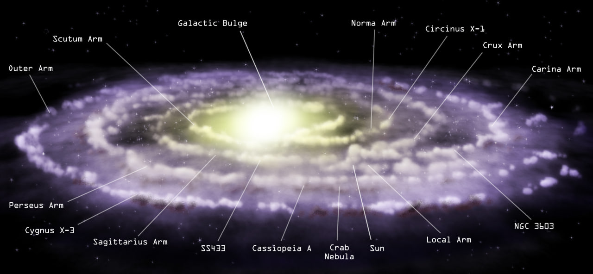
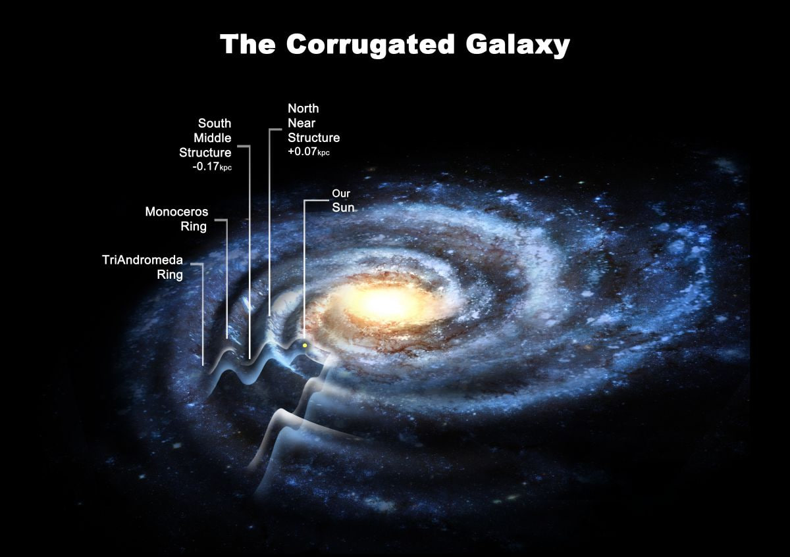
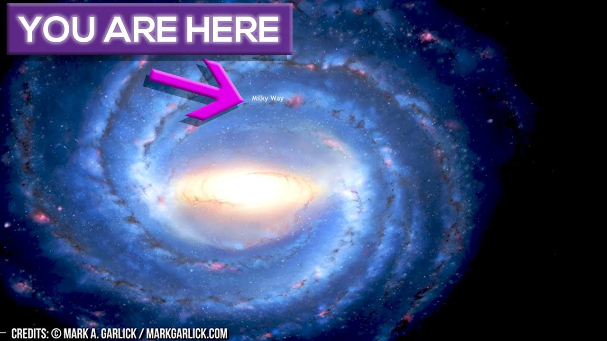
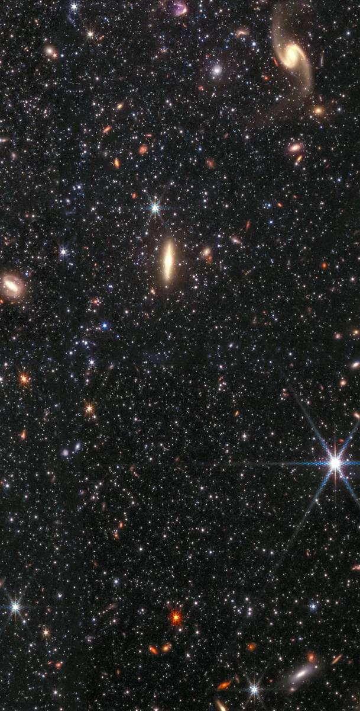
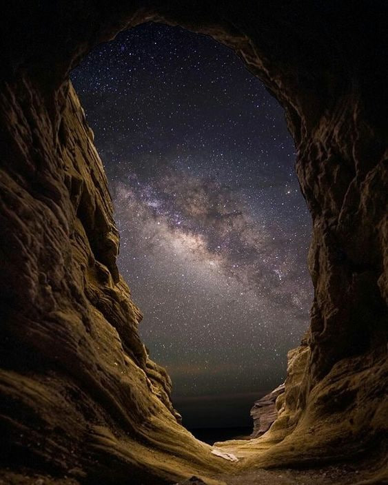

Did you know that our star, the Sun, is just one of hundreds of billions of stars swirling within an enormous cosmic place called the Milky Way Galaxy? The Milky Way is a huge collection of stars, dust and gas. It’s called a spiral galaxy because if you could view it from the top or bottom, it would look like a spinning pinwheel. The Sun is located on one of the spiral arms, about 25,000 light-years away from the center of the galaxy. Even if you could travel at the speed of light (300,000 kilometers, or 186,000 miles, per second), it would take you about 25,000 years to reach the middle of the Milky Way.
The Milky Way is the galaxy that includes the Solar System, with the name describing the galaxy's appearance from Earth: a hazy band of light seen in the night sky formed from stars that cannot be individually distinguished by the naked eye. The term Milky Way is a translation of the Latin via lactea, from the Greek γαλακτικὸς κύκλος (galaktikòs kýklos), meaning "milky circle".[24][25] From Earth, the Milky Way appears as a band because its disk-shaped structure is viewed from within. Galileo Galilei first resolved the band of light into individual stars with his telescope in 1610. Until the early 1920s, most astronomers thought that the Milky Way contained all the stars in the Universe.[26] Following the 1920 Great Debate between the astronomers Harlow Shapley and Heber Doust Curtis,[27] observations by Edwin Hubble showed that the Milky Way is just one of many galaxies.

The Milky Way is a barred spiral galaxy with a D25 isophotal diameter estimated at 26.8 ± 1.1 kiloparsecs (87,400 ± 3,590 light-years), but only about 1,000 light years thick at the spiral arms (more at the bulge). Recent simulations suggest that a dark matter area, also containing some visible stars, may extend up to a diameter of almost 2 million light-years (613 kpc).[28][29] The Milky Way has several satellite galaxies and is part of the Local Group of galaxies, which form part of the Virgo Supercluster, which is itself a component of the Laniakea Supercluster.
It is estimated to contain 100–400 billion stars and at least that number of planets. The Solar System is located at a radius of about 27,000 light-years (8.3 kpc) from the Galactic Center, on the inner edge of the Orion Arm, one of the spiral-shaped concentrations of gas and dust. The stars in the innermost 10,000 light-years form a bulge and one or more bars that radiate from the bulge. The Galactic Center is an intense radio source known as Sagittarius A*, a supermassive black hole of 4.100 (± 0.034) million solar masses. Stars and gases at a wide range of distances from the Galactic Center orbit at approximately 220 kilometers per second. The constant rotational speed appears to contradict the laws of Keplerian dynamics and suggests that much (about 90%) of the mass of the Milky Way is invisible to telescopes, neither emitting nor absorbing electromagnetic radiation. This conjectural mass has been termed "dark matter". The rotational period is about 212 million years at the radius of the Sun.
The Milky Way as a whole is moving at a velocity of approximately 600 km per second with respect to extragalactic frames of reference. The oldest stars in the Milky Way are nearly as old as the Universe itself and thus probably formed shortly after the Dark Ages of the Big Bang. The Milky Way is expected fo collide with the Andromeda Galaxy.

In the Babylonian epic poem Enūma Eliš, the Milky Way is created from the severed tail of the primeval salt water dragoness Tiamat, set in the sky by Marduk, the Babylonian national god, after slaying her. This story was once thought to have been based on an older Sumerian version in which Tiamat is instead slain by Enlil of Nippur, but is now thought to be purely an invention of Babylonian propagandists with the intention to show Marduk as superior to the Sumerian deities.
In Greek mythology, Zeus places his son born by a mortal woman, the infant Heracles, on Hera's breast while she is asleep so the baby will drink her divine milk and thus become immortal. Hera wakes up while breastfeeding and then realizes she is nursing an unknown baby: she pushes the baby away, some of her milk spills, and it produces the band of light known as the Milky Way. In another Greek story, the abandoned Heracles is given by Athena to Hera for feeding, but Heracles' forcefulness causes Athena to rip him from her breast in pain.

The Milky Way is visible as a hazy band of white light, some 30° wide, arching the night sky. Although all the individual naked-eye stars in the entire sky are part of the Milky Way Galaxy, the term "Milky Way" is limited to this band of light. The light originates from the accumulation of unresolved stars and other material located in the direction of the galactic plane. Brighter regions around the band appear as soft visual patches known as star clouds. The most conspicuous of these is the Large Sagittarius Star Cloud, a portion of the central bulge of the galaxy. Dark regions within the band, such as the Great Rift and the Coalsack, are areas where interstellar dust blocks light from distant stars. Peoples of the southern hemisphere, including the Inca and Australian aborigines, identified these regions as dark cloud constellations. The area of sky that the Milky Way obscures is called the Zone of Avoidance.
The Milky Way has a relatively low surface brightness. Its visibility can be greatly reduced by background light, such as light pollution or moonlight. The sky needs to be darker than about 20.2 magnitude per square arcsecond in order for the Milky Way to be visible. It should be visible if the limiting magnitude is approximately +5.1 or better and shows a great deal of detail at +6.1. This makes the Milky Way difficult to see from brightly lit urban or suburban areas, but very prominent when viewed from rural areas when the Moon is below the horizon. Maps of artificial night sky brightness show that more than one-third of Earth's population cannot see the Milky Way from their homes due to light pollution.
As viewed from Earth, the visible region of the Milky Way's galactic plane occupies an area of the sky that includes 30 constellations. The Galactic Center lies in the direction of Sagittarius, where the Milky Way is brightest. From Sagittarius, the hazy band of white light appears to pass around to the galactic anticenter in Auriga. The band then continues the rest of the way around the sky, back to Sagittarius, dividing the sky into two roughly equal hemispheres.[citation needed]
The galactic plane is inclined by about 60° to the ecliptic (the plane of Earth's orbit). Relative to the celestial equator, it passes as far north as the constellation of Cassiopeia and as far south as the constellation of Crux, indicating the high inclination of Earth's equatorial plane and the plane of the ecliptic, relative to the galactic plane. The north galactic pole is situated at right ascension 12h 49m, declination +27.4° (B1950) near β Comae Berenices, and the south galactic pole is near α Sculptoris. Because of this high inclination, depending on the time of night and year, the Milky Way arch may appear relatively low or relatively high in the sky. For observers from latitudes approximately 65° north to 65° south, the Milky Way passes directly overhead twice a day.

f we could travel outside our galaxy and look back, this is what our Milky Way Galaxy might look like from above. An artist created this illustration using data collected by astronomers.
The Milky Way gets its name from a Greek myth about the goddess Hera who sprayed milk across the sky. In other parts of the world, our galaxy goes by other names. In China it’s called the “Silver River,” and in the Kalahari Desert in Southern Africa, it’s called the “Backbone of Night.”

The study reveals that 60% of Europeans and almost 80% of North Americans cannot see the glowing band of our galaxy because of the effects of artificial lighting, while it is imperceptible to the entire populations of Singapore, Kuwait and Malta.
Overall, the Milky Way is no longer visible to more than one third of the world’s population.
Chris Elvidge of the US National Oceanic and Atmospheric Administration and a co-author of the study, added that the times he has seen the Milky Way have been magical experiences.
“Through our technology we’ve cut off that possibility for large numbers of people for multiple generations now,” he said. “We’ve lost something - but how do we place value on it?”
Described by John Milton as “a broad and ample road whose dust is gold, and pavement stars,” the Milky Way is so obscured by the effects of modern lighting that it is no longer visible to 77% of the UK population, with the galaxy masked from view across nearly 14% of the country, including regions stretching from London to Liverpool and Leeds.
Further afield, areas around the cities of Hong Kong, Beijing and a large stretch of the East Coast of America are among those where a glimpse of the galactic band is out of the question - a situation also found across much of Qatar, the Netherlands and Israel. In Belgium, it cannot be seen in 51% of the country.
“Humanity has enveloped our planet in a luminous fog that prevents most of Earth’s population from having the opportunity to observe our galaxy,” the authors write.